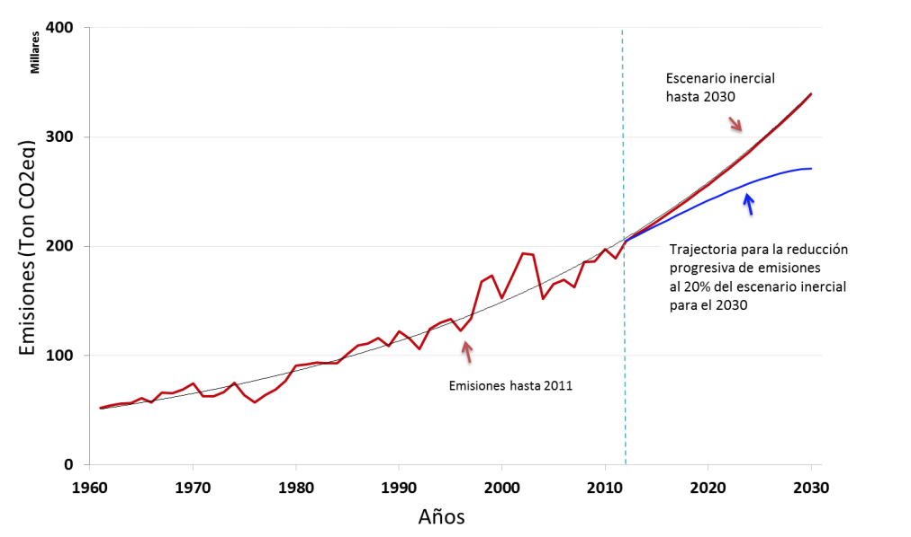

Determined Predicted Contributions of the Bolivarian Republic of Venezuela for the Fight against Climate Change and its Effects
November 2015
A. - Presentation
- Since its foundation our country has grown on the ideals of freedom, justice and independence, democracy and inclusion, aimed at reducing inequities and empowering peoples. Venezuela's struggle for independence from the colonial powers extended to five countries, under the conviction of the right and duty of the people to choose their own destiny from justice and solidary coexistence. That struggle is still going on.
- Simón Bolívar, recognized as the father of the Venezuelan homeland, defined some anti-colonialist and anti-imperialist American geopolitics; Left traced the fundamental conceptual elements, the categories of what is a geopolitical thesis that we claim 200 years later: the need to build the balance of nations, a world of justice, a world of peace.
- We are convinced that capitalist values such as consumerism, individualism and unlimited growth are the basis of the enormous social, political and environmental crisis that our civilization is undergoing. In the words of Major Chávez, Capitalism, the capitalist economy, ends up destroying the environment, destroying society, destroying the planet. It is the capitalist economy that is the fundamental cause of the destruction that exists today on the planet, of the great natural and climatic imbalances that have broken the balance on Earth. “.“It is practically and ethically unacceptable to sacrifice to the human species by invoking in a demented way the validity of a socioeconomic model with a galloping destructive capacity. It is suicidal to insist on disseminating it and imposing it as an infallible remedy for the evils of which it is precisely the principal cause.
- Capitalist values must be replaced by values based on justice, solidarity, community life, harmony with nature and respect for their cycles, respect for the spirituality of peoples, respect for indigenous values and knowledge and Peasants. In other words, they must be replaced by Eco socialist values. We believe that our societies must change and that this transformation can only happen from the roots, from the participation, actions and knowledge of groups and basic social organizations, from justice, equity, respect and inclusion.
- Venezuela has taken on the challenge of transformation. We are eco-socialists, by conviction of spirit and reason. We affirm our commitment to the construction of an alternative model of development and our unwavering will to work shoulder to shoulder with all those who want to accept the responsibility that the peoples of the world have given us. As President Nicolás Maduro recently stated at the United Nations Assembly, we believe that a new concept, a new world as a necessity of humanity, is necessary; A geopolitics of respect for peoples, identity; A policy of coexistence; A policy of peace with justice, with equality; A policy that rejects any attempt to impose the will of one country over another; Whether through the threat and use of force, or through financial, economic, cultural and political means.
- Our Constitution, passed in a referendum in 1999, enshrines Environmental Rights and is a pioneer in establishing that it is a right and duty of each generation to protect and maintain the environment for the benefit of itself and the future world. Every person has the individual and collective right to enjoy life and a safe, healthy and ecologically balanced environment. The State will protect the environment, biological diversity, genetic resources, ecological processes, national parks and natural monuments and other areas of particular ecological importance. The genome of living beings cannot be patented, and the law that refers to bioethical principles will regulate matter. It is a fundamental obligation of the State, with the active participation of society, to ensure that the population develops in a pollution-free environment, where air, water, soil, coasts, climate, ozone layer, Living species, are specially protected, in accordance with the law.
- The National Economic and Social Development Plan, approved as a National Law in 2013, manifests our desire to transform the country and contribute to saving life on the planet towards a just and sustainable world; Organized on truly democratic international bases and institutions; And oriented to the supreme enduring social happiness and the Good Living.
- Climate Change is one of the biggest problems affecting the planet today. It is a problem that transcends the environmental and must be considered in its ethical, economic, social and political dimensions. It is, in fact, one of the clearest manifestations of the crisis of capitalism as a predatory system that makes a healthy, full, solidary and peaceful life on earth impossible.
- The fight against Climate Change effectively materializes the confrontation between two models and world views. The developed countries seek to perpetuate the hegemonic schemes that favor them, strengthening the patterns of consumption, production, control, domination and markets that enrich their dominant elites. Developing countries demand the right to eradicate poverty and choose their own forms of development without suffering the consequences and bear the burden generated by the unsustainable levels of consumption of the so-called developed countries.
- This struggle has many facets, one of which is developing under the United Nations Framework Convention on Climate Change. What is being negotiated there goes far beyond actions for mitigation or adaptation: future power relations are being negotiated based on the use and distribution of energy and the natural elements that will mark the hegemonic structures of the future.
- The strategy to combat Climate Change must be effective but also fair and equitable. That is, it must consider historical responsibilities and contribute to reducing inequities that negatively affect many countries and social groups, not to deepen them. The principles and commitments recognized by all countries that are signatories to the United Nations Framework Convention on Climate Change establish ethical and practical bases in this regard, in particular with regard to common but differentiated responsibilities and priorities for development and eradication of poverty for developing countries. To this must be added, as agreed in Rio + 20, the right of each country to freely decide its own forms and ways of sustainable development. The struggle of the developing countries against Climate Change is the struggle for the defense of the Convention, its principles and provisions, is the struggle for life.
- It is the peoples, represented by their governments, who have the duty and the responsibility to mediate and balance the interests of the different actors who live in their countries. It is neither possible nor acceptable to delegate state responsibilities in the private sector. The United Nations Framework Convention on Climate Change is and should be a country-led convention, not a business round focused on questioned market mechanisms or a space for the enrichment of private enterprise. Each country must decide internally, according to its needs, priorities and development model, as will be articulated efforts with the non-governmental or subnational sectors, to try to impose a uniform scheme for all nations is contrary to national sovereignty.
- There is no solution without justice and there can only be justice if the mistakes and abuses of the past are corrected now, in this present that has touched us to live and that will leave its mark in the future. Any agreement behind the backs of justice and the past is a scam to the peoples of the world who have their eyes on us. We must look with optimism, commitment and dignity on the future, with our feet firmly planted in the present, from a clear conscience of justice and history. Climate Change is one of the facets of the global environmental crisis generated by excessive and unsustainable patterns of production and consumption, particularly in developed countries. Therefore, only the modification of these patterns constitutes a true and lasting solution to the environmental crisis and consequently to Climate Change.
- Climate Change is one of the facets of the global environmental crisis generated by excessive and unsustainable patterns of production and consumption, particularly in developed countries. Therefore, only the modification of these patterns constitutes a true and lasting solution to the environmental crisis and consequently to Climate Change.
- Venezuela, being a country with low altitude zones, island areas, low coastal zones, arid and semi-arid zones, areas exposed to floods, drought and desertification, and areas with fragile mountain ecosystems; In addition to being a developing country whose economy depends particularly on the production, use and export of fossil fuels, all categories established in the United Nations Framework Convention on Climate Change as being highly vulnerable; Is a country particularly sensitive to the adverse effects of Climate Change and the side effects of potential response measures. This vulnerability has become evident in a series of emergencies and natural disasters with severe effects on housing, food production, electricity generation and biological diversity, among others. Faced with this situation, Venezuela has taken large-scale measures to address and protect the affected population, reduce damages and reduce vulnerability at a high cost to the nation.
- Although Venezuela is not a country with historical responsibilities in Climate Change, it has embarked on an ambitious series of nationally financed actions with a great impact in repairing losses and damages, adaptation and mitigation. Within the framework of the UN Framework Convention on Climate Change in relation to Nationally Determined Expected Contributions (INDC), Venezuela, committed to building an eco-socialist productive economic model, presents some of its contributions in this area . These actions are articulated within the framework of the nation's development plan, which proposes the deepening of eco-socialist policies with a high social, economic and environmental impact in the field of Climate Change. Venezuela presents ambitious contributions in adaptation and mitigation, encompassing actions and policies towards a fair and sustainable development. These contributions have been carried out voluntarily and with their own financing. They have not been formally presented until now in the framework of the fight against Climate Change. The Plan of Economic and Social Development of the Nation establishes the priority of the fight against Climate Change in the framework of an integral development, humanist and eco-socialist oriented to Good Living in harmony with Mother Earth.
- Venezuela's emissions (0.18Gt CO2eq / yr) represent only about 0.48% of global greenhouse gas emissions. However, as part of the policies established in the country's economic and social development plan, Venezuela intends to implement a National Mitigation Plan in conjunction with a National Adaptation Plan. The National Mitigation Plan will aim at reducing the country's emissions by at least 20% by 2030 in relation to the inertial scenario, understood as a hypothetical scenario in which the plan is not implemented. The extent to which this goal is achieved will depend on the fulfillment of the commitments of developed countries in terms of provision of financing, technology transfer and capacity building in accordance with Article 4.7 of the Convention.

Sources of base information: http://www.worldbank.org/ (Emissions of carbon dioxide derived from the burning of fossil fuels and the manufacture of cement, including carbon dioxide produced by the consumption of solid fuels, liquids, combustible gases and gas burning).
- It is clear, however, that the actions and policies of a single country are not enough. Only if countries with historical responsibilities fully assume these responsibilities through ambitious mitigation targets (between 50 and 70% reduction of current emissions according to the IPCC in its 5th report, estimated likely to increase as knowledge improves) And the reliable, sufficient and predictable provision of means of implementation (financing, technology transfer and capacity-building) to developing countries; We can aspire to a real, just and lasting solution to the problem of Climate Change. This involves establishing global targets for all means of implementation, and monitoring, reporting and verification systems for compliance by developed countries. The means of financing must come from funds Public and be administered under the Convention according to the priorities and needs established nationally by each country. Technology transfer should be geared to the development and enhancement of endogenous capacities and technologies of developing country Parties (Art. 4.5, UNFCCC) by considering mechanisms for flexibilization of intellectual property rights to make this possible. The new agreement to be signed in Paris should be an agreement based on justice and aimed at deepening the implementation of the Convention under its principles and provisions; To establish ways to pay off the climate debt of developed countries, and to facilitate the realization of the right to development and poverty eradication in developing countries, an agreement that enhances the sustainable, just, equitable and supportive development of the planet.
- In accordance with decisions 1 / CP.19 and 1 / CP.20 of the Conference of the Parties to the United Nations Framework Convention on Climate Change, the Bolivarian Republic of Venezuela hereby presents its Nationally Determined Expected Contributions for the fight against Climate Change and its effects. It is important to emphasize, however, that what is agreed upon at COP21-MOP11 in Paris is a critical component of the future climate change scenario in which these contributions will continue to be implemented, which is why Venezuela reserves the right to reconsider its strategies and targets In accordance with what was agreed at COP21-MOP11 and national development priorities.
B. - Actions and programs with impact on adaptation or mitigation of Climate Change and its effects
Venezuela has undertaken a series of actions and programs with important repercussions in the fight against Climate Change and its effects from a perspective of justice and social inclusion. These programs could be deepened and multiplied through the fulfillment of the commitments of provision of means of implementation by developed countries under the Convention. Some are listed below:
INDUSTRY
Oil Industry
- As compensatory measures associated with PDVSA projects and mandated in environmental legislation, the oil industry has carried out the establishment and maintenance of compensatory forests in a total area of 14,423 hectares. These agroforestry systems (compensatory, production and protection forests) function as carbon sinks. The validation of the field variables is currently carried out to carry out the estimation of CO2 fixation. The establishment of an additional 2,184 hectares of Agroforestry Systems is planned for the period 2016-2019.
- The industry is currently developing a significant number of projects for the minimization or use of gas burned and / or vented by PDVSA in its exploration and production operations; This implies the adequacy of operations and facilities in terms of infrastructure and facilities for the use of natural gas. It is estimated that a cumulative total of 516 KTon of CO2Eq has been discharged into the atmosphere by the use of natural gas over a period of two years. For the period 2016-2019, it is planned to complete future projects, and it is estimated that, thanks to the execution of these projects, the amount of 538.2 KTon CO2eq / year will be discharged into the atmosphere.
- Plan 200 Socialist factories: Creation and repowering of recycling companies; Pulpaca (company with capacity to recycle wood and paper for the production of paper reels), recycle line of INVEPAL, VENEVIDRIO (Use up to 90% of glass for recycling in its production process), Complejo Siderúrgico and SIDOR use up to one 100% of scrap in its productive process, project of installation of production lines in the companies of the plastic corporation, strategic alliances with the private sector for the supply of secondary raw material for the industry and proposal of Law of Management and Recovery of Waste as Secondary Raw Material for Incorporation into the National Industry. All these initiatives generate an increase in energy efficiency and a decrease in the need for extraction of raw material, which translates into the reduction of emissions associated with industrial processes.
- National phase-out project for ozone-depleting substances: Progressive phase-out of the use of ozone-depleting substances and impacts on climate change, in compliance with the Montreal Protocol, seeks to reduce consumption of the country by 10% by 2015 with respect to its country-based consumption baseline set at 207 tonnes of ozone-depleting potential associated with the use of hydro chlorofluorocarbons (HCFCs), mainly in refrigeration, air conditioning and polyurethane foams. Through the training and sensitization plan of the actors involved on the environmental danger represented by the misuse of halogenated refrigerants, as well as the adequacy of the corresponding legal norm. This has meant the reduction of 2.5 MTon CO2Eq.
Electric Energy
Energy efficiency, rational use of energy and complementary energies
- About 70% of the energy in Venezuela is hydroelectric, which implies that the country is exceptionally clean in its energy matrix but at the same time highly vulnerable to droughts. Energy efficiency and the rational use of energy and the promotion of complementary energies have been strengthened as a policy with the creation of the Office of vice Minister of New Sources and Rational Use of Electric Energy.
- Energy efficiency and the rational use of energy and the promotion of complementary energies have been strengthened as a policy with the creation of the Office of vice Minister of New Sources and Rational Use of Electric Energy.
- In order to reduce this national vulnerability in terms of electricity generation in the face of drought, thermoelectric power plants have been built, generating a reduction of 4.38% in the dependence on energy production through large hydroelectric plants, with respect to The energy matrix of 2010. On the other hand, the substitution of thermoelectric generation technology based on liquid fuels (diesel and fuel-oíl) for natural gas in technologies of combined cycle in generating plants of the country began, being registered to the date one Increase of 6.92% in the generation with gas turbines with respect to the national energy matrix of 2010.
- Through the Incandescent Bulb Replacement Program for Saving Pumps since 2006 until the first half of 2015, 206,000,000 (206 million) Compact Fluorescent Lamps (CFLs) have been installed.
- Other measures include:
- Program for the replacement of air conditioners (A / C) and refrigerators for efficient equipment. 42,504 A / A (between2011-2013) and 3,077 refrigerators were replaced during 2012.
- Construction of two high-capacity wind farms (Paraguaná and La Guajira).
- Implementation of the Sembrando Luz Program that allows to provide electrical service to isolated communities, through hybrid systems of wind and solar energy. The management of the associated facilities has involved 1,327 training actions with 14,617 beneficiaries.
- Promulgation of legal regulations on Energy Efficiency: Law of rational and efficient use of energy; Resolutions on Energy Efficiency for the Public and Private Sector; Technical Regulations on energy efficiency parameters in electrical appliances: A / C, Refrigerators, LFC; Gradual ban on imports of incandescent bulbs. Energy efficiency labeling standards; Tariffs staggered according to consumption, ban on imports of inefficient devices.
- Implementation of the Banda Verde Plan aimed at the residential sector. Through this plan, the households that remain within the bands of energy consumption established for each region of the country receive a subsidy in the electric tariff
- Ministerial resolutions to reduce electricity consumption in the public and private sector. A reduction of 12% in the consumption of electric energy for the public sector and 8% for the private sector.
Energy Education and Communication Campaign
- Establishment of 3,000 Community Integrity Educational Brigades at national level, meetings of knowledge and experiences, state and national municipalities.
- Inclusion of contents on the Rational and Efficient Use of Electric Energy (UREE) in the Bicentenario Books Collection and in the computers of the mass computer program for students of basic education and "Canaimitas" baccalaureate.
- Training actions directed to the Popular Power: Organizations, Communes, Communal Councils, Institutions.
- Completion of twelve graduates in energy efficiency aimed at public and private sector workers at the national level.
- Inclusion of contents on the rational use of energy, energy efficiency and renewable energies, in undergraduate studies, specializations, non-degree studies and others.
- Inclusion of content related to energy and its impact on the environment within school curricula.
- State and national school meetings with children of primary education on the rational and efficient use of energy.
- Massive communication campaigns of energy saving: Saving energy is everyone's task, I am Conscious, Efficient Consumption.
LIVING PLACE
Great Mission Housing Venezuela
- The Housing Mission arose in 2010 in response to the emergency generated by torrential rains that affected hundreds of thousands of people in the poorest areas of the country. Through this Great Mission, more than 800 thousand houses have been constructed and delivered until November 2015 and the construction of three million houses is planned as a cumulative goal for 2019. This mission means a response to losses and damages from extreme rains to near Of 150 thousand people affected and a reduction of vulnerability to the effects of Climate Change for more than 12 million people.
TRANSPORT
Mission Transportation
- Under the theme of Collective mobility for good living, the Ministry of Popular Power for Land Transport and Public Works develops the Transport Mission, created on March 27, 2014. The Transport Mission is structured in terms of action: National Registry, Territorial Coverage, Services, Financing, Education, Infrastructure and Urban Mobility. Its implementation implies the more efficient use of means of transport and the improvement and updating of the automotive fleet resulting in greater efficiency and lower emissions. It comprises:
- Mastery of the Suppliers of Spare Parts and Supplies
- Security of Users and Carriers in the framework of the Mission to All Life Venezuela.
- Financing through Public Banking for Fleet Renewal.
- Shelters for Gandolas and Extra-urban Buses.
- Motorized shelters.
- School of drivers.
- Construction and conditioning of Passenger Terminals.
- Asphalting in the layout of urban transport routes.
- Construction of road solutions in cities.
- Constitution of New Transport Systems
Main Achievements of the Transport Mission
- National Carrier Census: It allows updating the registry of Carriers: labor condition, fleet situation, routes, stops and state of the units. It also involves recording the unmet transportation needs of all communities. To date, 96,500 Carriers have been registered and 3000 communities have been registered. It contemplates the installation of the Technical Mobility Tables: which will bring together all the living forces of each state in order to study the traffic problems and propose their possible solutions. This diagnosis will also allow establishing a map of mobility in each city.
- A road construction, rebuilding and maintenance plan has been developed throughout the national territory, with the result that 51 road solutions will have been approved before the end of 2015. These solutions allow traffic decongestion and considerable time reductions in Times of vehicular mobilization, managing to reduce the environmental impact of the vehicular park of the country.
- New BRT (Quick Transit Bus) systems have been created in the cities of Maracay, Barquisimeto, Barcelona, Maracaibo, Puerto La Cruz, Merida and Caracas. These special transport systems have exclusive channels, smart stops and security systems with satellite location.
- 45 new surface public transportation systems have been created with state-of-the-art units that cover 329 new operating routes serving more than 3 million people in 120 cities in the country.
- Inauguration of the Yutong Bus Plant, part of the China - Venezuela agreement, with an assembly capacity of 14 modern units per day.
- Creation of the Transporter Bank and delivery of state loans to the transport sector through public banks, which has allowed the fleet to be renewed through the delivery of 715 Units to 405 beneficiary lines.
Construction and expansion of Mass Transportation Systems with the consequent decrease in the use of vehicles.
- At present, C.A. Metro de Caracas runs a series of expansion projects for Lines, such as Line 5 (12.5 Km and 10 stations) and the Caracas - Guarenas - Guatire System (30 Km and 7 stations). In addition, the renewal and reconditioning of Line 1 is carried out. These works are complemented by two projects, which constitute auxiliary transport solutions to the Metro system, such as the Marquise Metrocable and the Bolivarian Cabletren.
- Line II of the Los Teques Metro System, which will run from the Alí Primera Station, located in the El Tambor sector, to San Antonio de los Altos, is currently under construction. It will be 12 kilometers long and will be distributed by six (06) Stations, which will cross the municipalities Guaicaipuro, Carrizal and Los Salias.
- Line 2 of the Valencia Metro System is under construction in the capital of Carabobo state, which will have an extension of 4.3 km and will benefit approximately 1,800,000 people.
- The Puerto Cabello - La Encrucijada Railroad, which has a length of 108.8 kilometers, is under construction and is focused on the development of the country 's North - Coastal axis, through a modern, fast and economical intermodal transport system able to mobilize more than 14 million users per year and carry over 11 million tons of cargo per year. It will have six stations: Puerto Cabello, Naguanagua, Guacara, San Joaquín, Mariara and Maracay. In addition to San Diego and La Encrucijada, which will be used for the placement of livestock, agricultural, livestock and industrial goods, and their subsequent distribution throughout the national territory. Thanks to this railway branch will significantly reduce the movement of freight transport. This work will generate 5,442 jobs between direct and indirect.
HEALTH
Increased coverage in medical care
- Before the Bolivarian Revolution in 1999, more than 60% of people living in popular sectors had never seen a doctor for a check-up appointment. In 2015, 12 years have passed since the creation of Barrio Adentro, an unprecedented mission that allows access to high-tech health services free of charge to significant sectors of the population. Barrio Adentro is responsible for at least 704 million 958 thousand free medical visits in the last 12 years.
- Barrio Adentro was created in 2003 with the help of the Cuban government to provide health services to the Venezuelan population in small outpatient clinics built and endowed with medical supplies in previously neglected areas. Later Barrio Adentro II was created to expand medical services, with the construction of larger outpatient clinics, and then in 2005 Barrio Adentro III, through which 600 integrated diagnostic centers and 600 integrated rehabilitation rooms were built. In 2006 Barrio Adentro IV began with the inauguration of specialized centers such as the Hospital Cardiológico Infantil in Caracas.
- The creation of these health programs imply a reduction of vulnerability to diseases, including those whose incidence and geographical distribution will increase as a result of Climate Change
POPULAR ORGANIZATION AND PARTICIPATION
- The strengthening of social organization in Venezuela is crucial for the reduction of vulnerability to Climate Change. The Communal Census 2013 allowed to quantify throughout the country 40,035 Communal Councils, 1,401 Communes, 1,294 Social Battle Rooms and 28,791 Social Movements, which number 71,521 social organizations. At present, 1377 communes and 45333 communal councils have been registered (Source: Ministry of People's Power for the Communes (2015) statistics.) Accessed on November 2, 2015. Available at http://www.mpcomunas.gob.ve/). The Communes and the Communal Councils are forms of social organization that through processes of territorialization generate actions of reduction of the vulnerability through the self-construction, the organization for the sustainable production and the organization for the life in communities where the transport and the Consumption are reduced by the territorialization and accessible location of services and inputs for life: local schools, markets, health centers, among others.
BIOLOICAL DIVERSITY
National Strategy for Biological Diversity
- Since 2010, the Bolivarian Republic of Venezuela has the National Strategy for the Conservation of Biological Diversity 2010-2020 (ENCDB) and its National Action Plan (PAN), bringing us forward five years to Goal 17 by 2015 of the Strategic Plan Convention on Biological Diversity (Aichi). The ENCDB and its PAN, as part of the Second Socialist Plan for Economic and Social Development of the Nation, sets out the fundamental guidelines that will allow, during this decade, the national articulation for the collective construction of an alternative life model based on sustainability. These instruments represent the methodological, conceptual and political framework aligned to the country project for the sovereign exercise of the conservation and sustainable use of Biodiversity, thus reducing vulnerability to the multiple adverse effects of Climate Change.
- The ENCDB and its PAN were built with the simultaneous participation of organized communities, students, groups, teachers, officials and militants, organized in workshops in numerous workshops, which had the participation of more than 5,000 people nationwide. During these meetings debates were generated that allowed the inclusion of the different world visions present in our territory, promoting strategic planning from the local realities and taking advantage of the strengths of the different regions of the country.
Venezuelan Congress of Biological Diversity
- The Venezuelan Congress of Biological Diversity is a space for the meeting of knowledge and the exchange of experiences. Six consecutive years have allowed the consolidation of anti-colonial and sovereign forms of circulation of knowledge, making possible the emergence of new actors and actors that produce knowledge in dialogue. The dialogue between different matrices of rationality, the complementarity of life itself, the recognition of diversity and the exchange of experiences are the premises on which these congresses are held.
- In turn, this space works as a mechanism for socializing knowledge about biological diversity from different perspectives and perspectives. The congress is part of the National Strategy for the Conservation of Biological Diversity 2010-2020, with the aim of socializing knowledge and promoting inclusion and social justice. This congress also functions as a mechanism to monitor the strategy itself and its plan and has been consolidated as an annual space for the exchange of knowledge and experiences on the conservation of biological diversity with social commitment. This periodic event is supported by a ministerial resolution, which seeks to ensure its continuity. This national event has become a meeting place between institutions, collectives, producers, producers of science, community members, community members, militants, amateurs, amateurs and all the different actors involved in the preservation of life and good living , Including adaptation to Climate Change. To date, approximately 11919 people have participated.
- This periodic event is backed by a ministerial resolution, which seeks to guarantee its continuity. This national event has become a meeting place between institutions, collectives, producers, producers, cultores of science, comuneros, comuneras, militants, amateurs, fans and all the different actors linked to the preservation of life and good living. , including adaptation to Climate Change. To date, approximately 11919 people have participated.
FOOD SOVEREIGNTY AND SUSTAINABLE AGRICULTURE
One of the sectors that are most strongly impacted by Climate Change is the food production sector. The promotion of agroecological systems based on sustainability and respect for natural ecosystem processes, urban and periurban agricultural systems and the prevention of climatic risks are very effective measures to adapt to Climate Change. Some actions and programs are listed below:
- There are 28 laboratories for the production of biological inputs (bio-controllers and biofertilizers) at the national level to replace the use of agrochemicals. Protocols have been developed for the management of biological inputs for seed production, as well as plans for planting maize, legumes and vegetables. This network of laboratories is under the responsibility of the National Institute of Integral Agricultural Health (INSAI).
Conservation of agrobiodiversity:
- Six annual Biodiversity Congresses have been held under a ministerial decree, where topics related to cultural and biological diversity are discussed. It is a relevant contribution the discussion to strengthen the organization of social movements around the valuation, conservation, reproduction and distribution of peasant, indigenous and afro-descendant seeds. In the same vein, a peasant, indigenous, intellectual and cultural movement has been strengthened. Its articulating axis is the protection of biological and cultural diversity associated with seeds, as a defense against climate change, and that it carries out organizational activities , Audiovisual material dissemination, training and production of foods and seeds with high organizational balances, in rural and urban areas supported by Venezuelan institutions.
- Experiences of rescue of potatoes and other native Andean crops have been carried out and incorporated these varieties to the national plans and public policies on seed.
Agroecology
- Program all hands to planting: The National All Hands to Planting program was created by resolution of the Ministry of Popular Power for Education (Resolution No. 024, dated April 15, 2009), which establishes the incorporation of The contents referring to agroecology in curriculum development, within the integrative axis of Environment and Integral Health, where agroecology should be part of the learning processes in the Venezuelan Educational System, from initial to secondary education.
- Creation of programs of training of Bachelor's degree and Diploma in Agroecology (Bolivarian University of Venezuela and Institute of Advanced Studies). Creation of the Latin American University Institute of Agroecology Paulo Freire (IALA). Program of urban and peri-urban gardens.
Program of urban and peri-urban agriculture Agrociudad
- In 2009, this program was created at the national level to promote and consolidate urban and peri-urban agriculture, as a system of family and community organization and integration, sustainability in terms of improving food availability. It was under the responsibility of the CIARA foundation and now FONDAS (National Fund for Socialist Agrarian Development of the Ministry of Popular Power for Agriculture and Lands). In the case of the Capital District, this year was created the Caracas Productive Secretariat in the Capital District Government called to promote productive experiences in the city with an agroecological approach. It articulates 550 productive experiences in the city, reducing vulnerability to Climate Change in the area of agriculture and food production.
Reduction of climatic risks in agricultural activities
- Establishment of Planting Schedules by the National Institute of Meteorology and Hydrology (INAMEH), to minimize the risks in agricultural production and the adequate management of water and of inputs in general, as key factors in the achievement of full food sovereignty. Among other things, it involves carrying out Agrometeorological Zonifications. Some expected benefits are:
- Reduction of the impacts of summer and meteorological droughts.
- Selection of pastures resistant to droughts and areas of watering.
- Selection of suitable areas for the development of crops with an integrated management of water resources.
- Seed Calendars Maps for all agricultural areas of the country.
- Map of Climate Types at the national level.
- Agroclimatic Zoning for at least 15 crops that the country demands as priorities.
- Permanent monitoring of extreme climatic events such as droughts and excessive rainfall that affect productivity.
- Have a unit or management of Agrometeorology responsible for timely response to farmers, agricultural insurance and decision makers.
CONSERVATION AND MANAGEMENT OF WATER
- In 1999 the Bolivarian Government initiated a process of incorporation of the town to the management of the water through the Technical Tables of Water as periodic, public and permanent spaces where the organized people exercise the right to sovereignty, participative protagonist democracy and co-responsibility in the area of drinking water and environmental sanitation service. These community organizations allow the empowerment of Popular Power for diagnosis, attention to their needs, formulation and accompaniment in the execution of community projects with direct management of the resource, as well as the creation of culture and environmental values to raise awareness about conservation and conservation. efficient use of water.
- In 2015, the Community Water Management Chambers were born, which allow the coordination of all entities involved in water management, including technical water tables and other forms of popular organization, increasing efficiency in the management of water networks. Distribution of drinking water and wastewater collection from its territory.
- At present there are 7454 technical tables of water throughout the national territory. This organization is part of the achievements that have allowed more than 96% of the Venezuelan population to have access to the potable water service as a leading participant in the management of the service, increasing efficiency and reducing vulnerability to the effects of Climate Change on Availability and quality of water.
CONSERVATION AND SUSTAINABLE USE OF FOREST
The conservation and sustainable management of forests is a major measure both in adaptation, reducing the vulnerability of forests and in mitigation, due to the protection of sinks and the increase of CO2 capture by them.
Generation of legal instruments for the preservation of the forest heritage and the sustainable use of forests:
Resolution 86 of 10/27/2008
Calculation of volume of wood extracted from the forest by a new formula (Smalian), that sincere in 95% the actual volume; The impacts of exploitation have been reduced and the modernization of the sawing and industrialization processes is possible.
Resolution 30 of 06/10/2009
It regulates the use of forest species, considering the minimum diameters of cuttability, guarantees the processes of ecological succession, forest structure and biodiversity. It implies the adoption of sustainable forest management practices such as the mapping of usable trees for the optimization of the route of extraction routes.
Resolution 29 of 10/06/2009
Selection and Registration of Seedlings, preserving germplasm banks and seed sources, in order to guarantee the mega diversity of the Tropical Forest. Use of reduced impact techniques for forest harvesting, reducing forest impact by 70% in relation to traditionally applied Extraction Techniques.
National Forestry Socialist Company (ENAFOR)
The company is created with a new approach of low impact management, in which the environmental and social over economic interests prevails; Promotes sustainable, environmental, social and economic forest management projects under the principle of multiple uses, promoting the direct participation of local communities and other social organizations in the production, processing and distribution of forest-derived goods and services. This company has implemented the Imataca Forest Reserve Sustainable Forest Management Plan (RFI), the Imataca V Management Unit, whose results are summarized below:
- Implementation of the new model of forest production in an area of 166350 ha, with the possibility of expanding to one million hectares.
- According to estimates made by ENAFOR, for an area of 200,000 ha of intervened and non-intervened forests in the RFI (Units III and V), the carbon stored in them amounts to 159 tons / ha, which results in That area a total of 31,800,000 tons of C (116,388,000 t CO2eq) as baseline. With the application of the new Forest Management Model applying the Technical and Legal Norms, it was estimated as Direct Avoided Emissions: 1,136,759.35 tCO2eq for the 5 years of the project in 25,000 ha (227,351 tCO2eq for 5,000 ha / year) and avoided emissions Indirect: 18,188,149 tCO2eq for the 5 years of the project (3,637,629CO2eq per year in 80,000 ha). As a baseline, a loss of 453,135 tonnes / year CO2eq per use of conventional forest techniques is estimated for an area of 5,000 ha / year.
- ENAFOR, has produced 200,000 plants of which 60% (120,000) have been donated for planting by the Arból and Vivienda missions, this is equivalent to a 100 ha area. The remaining (80,000) have been planted by ENAFOR for an equivalent area of 50 ha. Communities have been incorporated into the different activities of Sustainable Forest Management. These activities involve: Agroforestry, tree measurements, Piqueros, Nursery, and Social development Establishment of Germplasm Bank for the preservation of forest species.
National Forestry Inventory
Project whose general objective is to provide homogenous, detailed, reliable and continuous statistical and cartographic information on the state and evolution of forest resources. 133 inventoried plots representing an area of 6,992,953 ha, are equivalent to 7.62% of the national territory. Calculation of carbon and CO2eq potential of all types of forests at national level.
- Project to monitor coverage changes in the Amazon Region of Venezuela.
Maps of deforestation years 2000-2010-2013-2014. National Plan for Monitoring changes in coverage in real time. Baseline study to plan the reduction of GHG sources.
Forest Fire Prevention and Control
The country has developed a policy of protection of the National Parks and Natural Monuments, mainly of the forest species that are within those areas. More than 2,883 events have been combated in a timely manner within the protected areas administered by the National Parks Institute (INPARQUES) in the period 2011-2015. The taking of effective actions allowed the protection of 98.47% of the wooded areas located within the protected areas.
Mission Tree
The Tree Mission is an ambitious national plan for reforestation promoted by the State since 2006, where communities (Community Councils, Conservation Committees, Schools, etc.) and public institutions participate. The reforestation is done for education, conservation, agroforestry and industrial purposes based on integral and sustainable management oriented to Good Living. It includes the collection of seeds, production of plants in institutional, school or community nurseries, planting and maintenance for four continuous years. To date, more than 30 million plants have been established.
RESEARCH, MONITORING AND SYSTEMATIC OVERVOLTAGE
Research in Climate Change
- Since 2011 the Ministry of Popular Power for University Education Science and Technology has financed 128 research projects in the area of Climate Change. These projects were selected in open calls to organized communities, foundations, universities and research centers throughout the national territory. They focus on mitigation and adaptation on a wide range of topics including complementary energies, sustainable agricultural production, education, housing, emissions inventory, baseline information, predictive models and conservation and sustainable use of biological diversity.
Increased national capacities for hydrometeorological monitoring and prediction of climate in the country
- Densification of the existing network of automatic hydrometeorological stations at national level
Currently the National Institute of Meteorology and Hydrology (INAMEH) develops the project to automate the country's hydrometeorological network in time quasi real, in order to recover the continuity of historical records and to obtain greater space coverage according to the climatic types and the National hydrology. To date about 300 hydrometeorological stations have been installed, however, projects and agreements are developed to further densify the existing network.
- Future climate prediction
The Regional Climate Models will allow the elaboration of the lines of action to be considered within the adaptation strategies for Climate Change; Will also allow the development of studies for the Greenhouse Gas Inventory and will provide technical precisions for voluntary mitigation. Other benefits of developing these models are:
- Reduction of risks due to climate variability and climate change, in the specific sectors of Health, Disaster, Water, Agriculture and Biodiversity in General.
- Establishment of Climate and Hydrological Indicators and Models for the continuous monitoring of current and projected adverse hydrometeorological events.
- Elaboration of Indices of Evidence of Climate Change and Climate Variability.
EDUCATION
Educational Policies, community participation and socio-environmental training for the fight against Climate Change
- The headquarters of the Hydrological Companies of Venezuela HIDROVEN has developed an important management of technical and economic support to the communities for the self-construction of the services of Drinking Water and Environmental Sanitation, using as technical structure the Technical Water Tables. These are grassroots community organizations dedicated to improving the provision, maintenance and operation of the potable water and sanitation service. 7,454 National Water Technical Tables and 74 Community Water Councils have been formed.
- Within the framework of the training and participation program, 355 community projects have been developed benefiting 423 communities and 442,809 people, teachers have been trained in relation to Climate Change, Water Knowledge Meetings have been held, And Hidroven workers in relation to Climate Change, have formed 1,118 Integrated Community Brigades in schools and 594 Technical School Water Tables.
Environmental Educational Training Program and Popular Participation of the Ministry of Popular Power for Ecosocialism and Water
- Preparation and dissemination of publications aimed at the subsystem of basic education with quality content. The Environmental Education File for Teachers and Teachers. Desplegable: Somos Ambiente N ° 3 and N ° 4. Support tool for environmental education and dissemination on various topics, including those related to climate change. The file consists of ten topics; One of them is: Climate Change. Regarding the publication Somos Ambiente No. 3 Climate Change and No. 4 Ozone Layer
- Other instances of popular participation such as the Collective Intersectoral Environmental Education Management and Community Participation. 2010-2015 (CIGEA) and the Network of Volunteer Environmental Watchers (REDVIVA): They have provided support to environmental management, encouraging proactive and co-responsible participation of the community and institutions. Socioenvironmental Training Actions raising awareness on the theme of Climate Change. 10,215 Volunteer Watchers have been trained
WASTE MANAGEMENT
One of the largest emitting sectors worldwide is the waste and solid waste sector; therefore, management plans in this area have an impact on the reduction of emissions and on the possibilities of implementation of systems of disposal and efficient use of the gases generated.
National Plan for Sanitation of Landfills and Construction of Landfills. Among the achievements of the Plan are:
- Sanitation of landfills, construction of landfills, transfer stations, recovery of final disposal sites. The proper operation of final disposal sites for solid wastes and wastes minimizes the occurrence of infectious diseases (vector diseases), while allowing the controlled capture of the CH4 generated, establishing conditions to implement a system for its elimination in the short term.
Management Reports and various Technical Reports Comprehensive Strategic Plan for Equipment and Machinery for the Handling of Solid Wastes and Waste. Among the achievements of the Plan are:
- Optimization of waste collection and transportation activities in the municipal area. The collection and transportation of solid wastes and waste reduces the proliferation of clandestine landfills, minimizing the occurrence of infectious diseases (vector diseases), and contamination of water and soil.
Reorganization and adaptation of the National Environmental Authority.
- Creation of a new Vice-Ministry, with an ecosocialist vision for the Integral Management of Wastes and Wastes, which will exercise the rectory in this matter. The efficient and effective management of wastes and wastes through progressive regulation and strategic planning contributes to the minimization of the generation of wastes and wastes by means of their prevention or their use, wastes that would ultimately increase current emissions or become new sources of GHG emissions.
ENVIRONMENTAL MANAGEMENT
Plan for Management and Integrated Management of Coastal Areas (POGIZC) of the Bolivarian Republic of Venezuela.
- POGIZC is in its final phase of elaboration and establishes the spatial and temporal reference framework that guarantees the conservation, the use and sustainable use of the coastal zones and allows raising the quality of life of its inhabitants. To this end, it defines 10 Programs for the Integrated Management of Coastal Zones. POGIZC has generated and is generating a series of technical documents relevant to reducing vulnerability to Climate Change
- Implications of Climate Change in Coastal Areas and the Aquatic Space of Venezuela (2011).
- Socio-Natural and Technological Risks in the Coastal Areas of Venezuela, 2014 (In Elaboration). Public Domain in the Coastal Zone of Venezuela: Criteria for its Delimitation (Document validated with the Central and State Coastal Zone Work Committees).
- Public Domain in the Coastal Zone of Venezuela: Criteria for its Delimitation (Document validated with the Central and State Coastal Zone Work Committees).
Draft National Plan for Land Management (2010)
- National planning instrument that guides the development of all economic, sociocultural and environmental sectors of the country. It is estimated that the implementation of this plan generates a decrease in the vulnerability of the population and socio-productive activities in the processes of space occupation in front of Climate Change in the next 20 years. Four (4) State Management Plans have been considered considering the risk variable for the analyzes and assignments of use (states Táchira and Falcón, 2004, Miranda, 2011 and Vargas, 2013 unpublished). Incorporating the risk variable in the State Planning Plans of the Territory, as well as those that could be generated at Municipal, Urban and Community level will reduce the vulnerability of the population and their socio-productive activities.
Draft Plan for the Planning of the Orinoco Oil Belt Territory Hugo Chávez Frías.
- A regional planning instrument that guides development based on the country's main oil industry, in harmony with other economic and productive sectors of the Nation under an environmentally responsible approach. In identifying the threats, especially those of a technological nature, programs of research and monitoring of industrial processes, particularly those that could increase emissions, are proposed within the framework of the plan.
Areas under the Special Administration Regime (ABRAE) and its Ordinance Plans and Regulations of Use (PORU)
- Territorial management tools that identify areas of strategic value of the Nation in terms of Preservation, Protection, Production and Geostrategic and for which units of order are identified and uses and activities are established according to their creation objectives.
RISK EMERGENCY AND DISASTER MANAGEMENT
Legal basis
- Creation of the Office of Deputy Minister for Risk Management and Civil Protection and promulgation of the Law on Integral Management of Socio-Natural and Technological Risks, promulgated according to Official Gazette No. 39.095 of January 9, 2009. Law that explicitly considers the risks associated with Change Climate.
Plans, projects and strategies in progress
- National Risk Management Plan: Project framed in article 55 of the Constitution of the Bolivarian Republic of Venezuela and historical objective 5, national objective 5.4 and strategic objective 5.4.3, of the Plan of the Motherland 2013-2014. Develop strategic lines that allow the study, identification and delimitation of risk, as a basis in the planning process, as well as the development of risk mitigation projects throughout the national territory.
- Atlas of Exposure to Socio-Natural and Technological Threats: Technical Document conceived as an Atlas that will serve as a source of information and consultation for the process of planning and territorial, sectoral and population planning of the country based on management for risk minimization.
- National Information Registry for Integral Disaster Risk Management: A project aimed at ensuring the integration and standardization of inter-institutional information through the creation and strengthening of a technological platform for consultation by different public and private institutions in all the national territory.
- Construction of Vulnerability Indicators: A project aimed at the construction of Environmental, social, physical, institutional and economic vulnerability indicators, adapted to the national reality and generators of information related to the conditions of fragility, exposure and capacities in said areas.Its goal is the application of indicators in the planning and management process, by public and private institutions in the national territory.
- Municipal Offices of Socio-Natural and Technological Risks: National project framed in article 14 of the Law on Management of Socio-Natural and Technological Risks; The purpose of the project is to comply with the national policy on risk management and to coordinate the activities in the territorial area, by incorporating the risk variable in the management of regional and local development bodies according to what is established in the law.
- Strengthening of local capacities for the integral management of Socio-Natural and Technological Risks in communities: Its objective is the planning and execution of integral actions in communities of the Metropolitan Area of Caracas, in order to increase the capacity of response by the communities before Events of natural and technological origin.
- Comprehensive Management of Socio-Natural and Technological Risks in the Health Sector: This project is framed in the development of guidelines for the application of comprehensive risk management in the health sector at the national level, whose objective is to strengthen the response capacities of the sector Health, adverse events.
- Regional Coordination: Through UNASUR and MERCOSUR Venezuela actively participates in working groups for cooperation in the prevention of disasters and in the fight against the causes and effects of climate change; They seek to increase coordination in the prevention and response to socio-natural disasters and achieve a mechanism of mutual assistance at the sub regional level, through policies, strategies, plans and activities in estimation, prevention, risk reduction, disaster preparedness and response, Humanitarian assistance, rehabilitation and reconstruction, as well as technical assistance and exchange of experience in the field.
C.- National policies for the fight against Climate Change and its effects
Venezuela has a National Economic and Social Development Plan that includes a strong socio-environmental Eco-socialist component whose implementation attacks the main causes of Climate Change. Although the Plan is an articulated whole and can only be understood and implemented from an integral view of it, the following are some of the objectives of the Plan with more relevance:
Historical Objective No 5
Contribute to the preservation of life on the planet and the salvation of the human species.
National Objective
5.1 Build and promote the productive economic eco-socialist model, based on a harmonious relationship between man and nature that guarantees the rational and optimal use and exploitation of natural resources, respecting the processes and cycles of nature.
Strategic and General Objectives
5.1.1 Collectively promote the construction and consolidation of socialism as the only option against the predatory, discriminating and unsustainable capitalist model.
5.1.1.1. Guarantee the sovereignty and leading role of organized People's Power for decision-making, from the exchange of knowledge, rationalities and ways of life, to build eco-socialism.
5.1.1.2. Develop an integral policy of conservation, sustainable use, protection and scientific dissemination of the biological diversity and the water reservoirs of the country.
5.1.1.3. Promote and guarantee new processes of production and valorization of scientific, ancestral, traditional and popular knowledge, as well as new relations among them, with special attention to the practices of social groups invisibilized and discriminated by capitalism and neocolonialism
5.1.2. To promote, at the national and international levels, an ecosocialist ethics that promotes the transformation of the unsustainable patterns of production and consumption characteristic of the capitalist system.
5.1.2.1. Promote and develop a vision of the rights of Mother Earth, as a representation of the rights of present and future generations, as well as respect for other forms of life.
5.1.2.2. Prioritize common interests over individuals, from a perspective centered on balance with nature and respect for present and future generations.
5.1.2.3. Promote substantive equality between genders, people, cultures and communities.
5.1.2.4. To foment a new scheme of values, orientated to the respect and preservation of the nature that transforms the collective conscience, on the capitalist patterns of production and consumption.
5.1.3. Generate socio-productive alternatives and new schemes of social, economic and financial cooperation for the leverage of ecosocialism and the establishment of a fair trade, under the principles of complementarity, cooperation, sovereignty and solidarity.
5.1.3.1. To promote research, innovation and production of technological inputs of low environmental impact, as well as the rescue of ancestral technologies for agricultural and livestock production and processing, among others, increasing efficiency and productivity rates.
5.1.3.2. To promote the generation and social appropriation of knowledge, technology and innovation that allow the conservation and sustainable, just and equitable use of biological diversity, guaranteeing the sovereignty of the State over its natural resources.
5.1.3.3. Create ecological urban systems, with architectural designs balanced with natural ecosystems that reduce levels of environmental pollution.
5.1.3.4. Promote the development of sustainable and sustainable tourism activities for the enjoyment of the population.
5.1.3.5. To constitute a national, regional and local system for the use of waste, for the creation of useful inputs for living well, giving priority to their use as secondary raw materials for the national industry.
5.1.3.6. Preserve and manage strategic areas for conservation, such as the ABRAE, for the vital benefits derived from its conservation and its contribution to supreme social happiness.
5.1.3.7. Promote the creation of local, national and international networks for the promotion of the ecosocialist model.
5.1.3.8. To promote practices of conservation of the environment in the socio-productive activity, surpassing the criterion of economic efficiency since it is a practice unrelated to the rationality in the use of natural resources.
5.1.3.9. Implement financing policies for the development of productive units, promoting the use of environmentally friendly technologies.
5.1.3.10. Rescue the ancestral knowledge of the native peoples about the productive processes, for the development of sustainable technologies that impact on the new schemes of international relationship.
5.1.3.11. Encourage alternative means of payment that transcend the use of currencies (paper and metal), facilitating the establishment of fair trade between South American peoples and allied countries, while modifying the influence of the US dollar as a benchmark in international trade .
5.1.3.12. Facilitate access to small and medium producers and associative forms of ownership and production, for their effective insertion in intraregional value chains, with environmental sustainability.
5.1.4. Promote the protection of the environment, the efficiency in the use of resources and the achievement of sustainable development, implementing reduction and reuse in all public and private economic activities.
5.1.4.1. To promote the sustainable and sustainable use of natural resources in the production, circulation and consumption of goods, products and services, as well as the reduction of waste, promoting permanent campaigns of awareness.
5.1.4.2. Encourage the reuse of waste for use as raw materials or final goods; through the formation of circuits that include the classification of waste by the entire population, establishing collection centers and manufacturing production units.
5.1.4.3. Develop legal regulations that promote the implementation of reuse in the country.
5.1.5. Substantially improve the socio-environmental conditions of cities.
5.1.5.1. Promote energy-efficient cities, through the use of energy-saving technologies, as well as based on the use of clean energy (wind, solar, gas, among others).
5.1.5.2. Develop efficient public transport systems in the use of resources and low environmental impact.
5.1.5.3. Increase the density of green areas per inhabitant, by building parks and natural socialization spaces.
5.1.3.4. Promote non-polluting construction systems and eco-efficient housing systems.
5.1.3.5. To establish ferrous and non-ferrous scrap as an input of national interest for the production process, in order to address the cost structure of products and the care of the environment as well as energy efficiency.
5.1.6. Promote the generation of clean energy, increasing its participation in the national energy matrix and promoting technological sovereignty.
5.1.6.1. Develop wind power generation projects to increase their participation in the energy matrix.
5.1.6.2. Increase the generation of solar energy through the installation of solar panels factories, which serve as a priority the energy demand of isolated populations.
5.1.6.3. Conduct studies for the development of marine energy sources specifically the olamotor and tidal power; In order to take advantage of the potential of our extensive coasts.
National Objective
5.2. Protect and defend the permanent sovereignty of the State over natural resources for the supreme benefit of our people, who will be their main guarantor.
Strategic and General Objectives
5.2.1Promote national and international actions for the protection, conservation and sustainable management of strategic areas such as freshwater and surface water sources and reservoirs, watersheds, biological diversity, seas, oceans and forests.
5.2.1.1. Maintain leadership in multilateral and regional international negotiations, related to respective sectoral environmental legal frameworks.
5.2.1.2. Promote the conservation and sustainable use of biological diversity, within a regional, continental and global framework geared towards integration, sovereignty and living well.
5.2.1.3. To deepen, articulated between instances of the Public Power and the People's Power, the integral protection of water as a duty, making responsible use of it and promoting national and international spaces of discussion about its use and democratization.
5.2.1.4. Maintain independence in the management of the system for obtaining, purifying, administering and supplying drinking water.
5.2.1.5. Protect the watersheds of the country and all the natural resources present in them, promoting their integral management, with special emphasis on those located south of the Orinoco.
5.2.1.6. Continue to promote the recognition of access to drinking water as a human right in all national and international spheres.
5.2.1.7. Ensure sovereign control over the knowledge, extraction, distribution, commercialization and uses of strategic minerals, in a sustainable way, according to the highest national interests.
5.2.2. Dismantle and fight against international schemes that promote the commodification of nature, environmental services and ecosystems.
5.2.2.1. Activate strategic alliances to combat the commodification of nature at all national and international levels.
5.2.2.2. To promote the development of a vision from the South that allows strengthening the defense of regional interests in environmental matters.
5.2.2.3. Promote in the South American integration organizations ALBA, CELAC, UNASUR, MERCORSUR, PETROCARIBE, as well as in the various international spaces to which Venezuela assists, the concept of low environmental impact across all actions undertaken.
5.2.3. Promote cooperation at the regional level for the integrated management of transboundary natural resources.
5.2.3.1. Reinforce cooperation with border countries on issues of environmental management and ecological zones of common interest in accordance with the principles of international law, respecting national sovereignty.
5.2.3.2. To defend the territorial rights and sovereignty of the Venezuelan State in the negotiations related to the administration of marine, submarine and oceanic spaces, as well as the biological diversity present in those spaces.
5.2.4. To fight against the securitization of global environmental problems, to avoid incorporating environmental and human issues as issues of International Security by the hegemonic powers.
5.2.4.1. Maintain vigilance on the development of the agenda of the United Nations Security Council to avoid interference in environmental and human issues, and its treatment as international citizen security issues, which undermines the sovereignty of peoples.
5.2.4.2. Strengthen substantive discussions on economic, social and environmental issues at all international, regional and multilateral levels so that decisions are made in an inclusive and transparent manner, with no neo-colonial orientation on the part of developed countries, promoting the incorporation Of the Popular Power and in particular the social movements in these spaces.
National Objective
5.4. Contribute to the formation of a great global movement to contain the causes and repair the effects of climate change that occur as a consequence of the predatory capitalist model.
Strategic and General Objectives
5.4.1. Continue the struggle for the preservation, respect and strengthening of the climate regime formed by the United Nations Framework Convention on Climate Change and its Kyoto Protocol.
5.4.1.1. Dismantle the international carbon market schemes that legitimize the purchase of pollution rights and the unpunished destruction of the planet.
5.4.1.2. Promote and promote the strengthening of the current legal climate regime, with an emphasis on the historical responsibilities of developed countries.
5.4.1.3. Promote and support actions that promote international justice in relation to the failure of developed countries to fulfill their obligations under the Kyoto Protocol.
5.4.1.4. Initiate a process of transformation of national legal provisions to ensure the administration and protection of natural heritage, in the construction of ecosocialism.
5.4.2. Design a mitigation plan that covers the productive sectors that emit greenhouse gases, as a voluntary national contribution to efforts to save the planet.
5.4.2.1. Promote the technological adaptation for a transformation of the productive sector, in a sustainable way, with special emphasis in the energy, agriculture and livestock sector, incorporating the principle of prevention and management of solid and hazardous waste.
5.4.2.2. Promote at regional and international level commitments by all countries and national mitigation measures that help to correct the environmental deterioration generated by global climate change.
5.4.2.3. Positioning Venezuela as a world reference in the struggle for the fulfillment of the agreements established and its impulse for the construction of a new ecosocialist system.
5.4.3. Design a national adaptation plan that allows the country to prepare for the scenarios and climatic impacts that will occur due to the irresponsibility of the industrialized countries, polluters of the world.
5.4.3.1. Coordinate actions with all national entities responsible for territorial planning and disaster management, with a prospective vision of the temperature increase expected for the next 20 years, depending on the mitigation promises that can be consolidated in the framework of the Organization of The United Nations.
5.4.3.2. Calculate the costs of losses and damages resulting from extreme climatic situations, including insurance and reinsurance for specific sensitive sectors (such as agriculture), which should be added to the ecological debt of industrialized countries.
5.4.3.3. Encourage the development of municipal and local adaptation plans for risk management scenarios that directly involve co-responsibility between the State and People's Power.